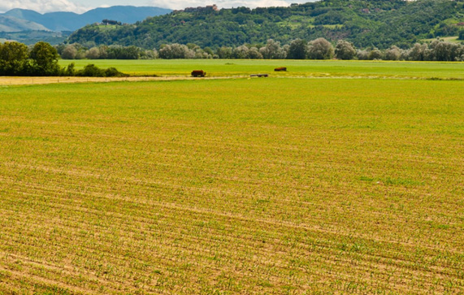

Plateaus vary in shape and size. An example of a plateau in Tanzania is the Southern highland plateau in the regions of Iringa, Mbeya and Njombe.
The importance of plateaus
Some plateaus are used for human settlements and preserved as tourist attractions due to their beautiful outlook and pleasant weather. For example, Kitulo is a national park situated in the Southern highland plateau in Mbeya and Njombe. This park is located between the peaks of Kipengele, Uporoto and Livingstone mountain ranges. This is the first reserve in Africa to be established so as to conserve its natural plants and flowers. Other parts of the plateau are used for agricultural purposes.
Plains
A plain is a landform that is relatively flat. It is unlike a mountain or a hill. A large part of a plain tends to have a fairly uniform elevation as shown in Figure 8. In Tanzania, plains include certain parts of the Serengeti and Tarangire National Parks.
